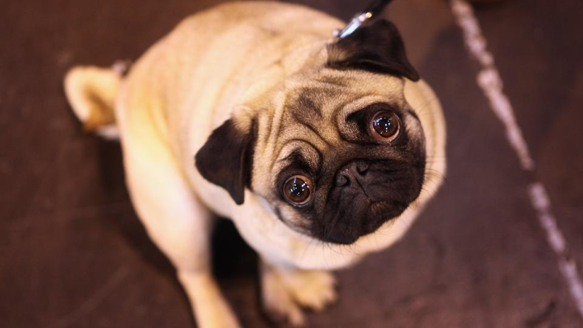
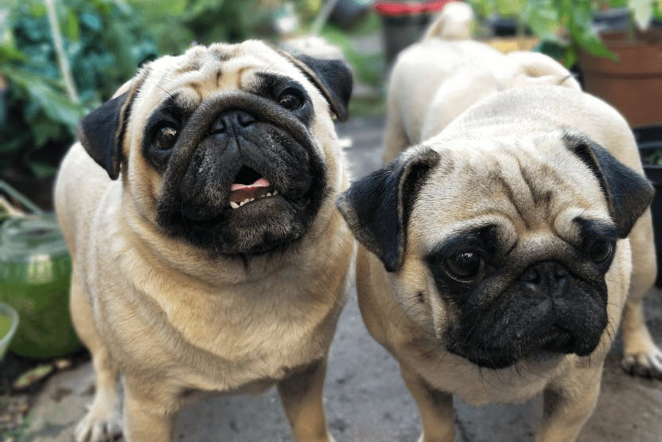

Woofkipedia

Meet the pugs, the delightful dog!

Pugs are ancient and charming little dogs with a rich history. They were once favored by Chinese emperors and later became companions for monks in Tibetan monasteries. Dutch traders brought Pugs to Europe in the 1500s, and they gained royal status in Holland after alerting the Prince of Orange to an impending attack. These compact dogs have massive round heads, large, expressive eyes, and deep wrinkles on their short muzzles. Their most common coat colors are fawn and black, with fawn-colored Pugs having black “masks” on their faces. Pugs are known for their playful and goofy personalities, making them ideal house pets. They thrive in moderate climates and enjoy being around people of all ages 12.
varieties
-Pugs primarily come in three main color variations: Fawn Pugs: These have a light beige or yellowish-brown coat. Black Pugs: Their shiny black coat may have a bluish tint. Brindle Pugs: Their coat features alternating stripes of black and fawn. Additionally, there are Silver Fawn Pugs with subtle variations within these color categories.Personality
-Pugs are affectionate, loyal, and playful. They have a dry sense of humor and are known for their entertaining antics. While they can be stubborn, Pugs genuinely want to please their owners. Although slow to mature, they remain puppy-like for up to four years, which means they may not be the best companions for very young children. Pug owners often find themselves saying, “Pugs are like potato chips; you can’t have just one!”.Gallery

Diet Chart
| Life Stage | Meal size |
|---|---|
| Before 3 months | 4 meals per day |
| After 3 months | 3 meals per day |
| 1 to 7 years | 2 meals per day |
| More than 7 years | 2 meals per day |